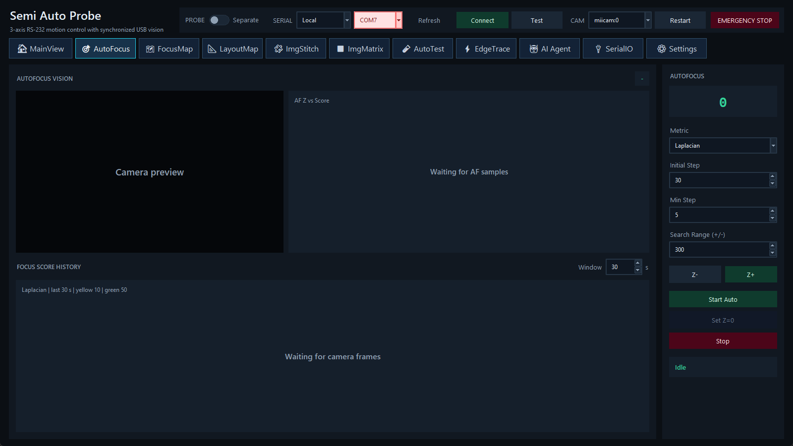

前置条件
- Serial 已连接、相机已有有效 frame，Probe 为 Separate，且没有其他运动工作流占用。
- 先用小步长确认 Z 正负方向与安全搜索范围；Settings 中 green threshold 必须不低于 yellow threshold。
页面区域
- AUTOFOCUS VISION：运行期间显示采样帧。
- AF Z vs score：显示 Z 与评分曲线、精细搜索区和拟合结果。
- FOCUS SCORE HISTORY：显示最新相机帧的 Laplacian、Tenengrad 与 Brenner 历史及阈值状态。
- AUTOFOCUS：当前 Z、Metric、Initial Step、Min Step、Search Range、Z-/Z+、Start Auto、Set Z=0 与 Stop。
参数
| 参数 | 作用 |
|---|
| Metric | Laplacian 对边缘二阶变化敏感；Tenengrad 使用梯度能量；Brenner 使用像素差。不同样品应通过重复性选择。 |
| Initial Step | 粗搜索 Z 步长，单位为 pulse。 |
| Min Step | 精细阶段允许的最小步长。 |
| Search Range (+/-) | 以起始 Z 为中心的允许范围；不是机械行程保护。 |
采样 settle 时间、每点 frame sample count、峰值模型和黄/绿阈值在 Settings 中配置。峰值模型可用于从离散评分估算最佳 Z；最终仍受有效样本与搜索边界约束。
运行步骤
- 保持样品静止，确认预览清晰且曝光没有饱和。
- 选择 Metric，设置保守的 Initial Step、Min Step 与 Search Range。
- 单击 Start Auto。状态依次显示运行、采样、拟合和终止。
- 检查 Z-score 曲线：峰值应在搜索范围内部且有足够邻近点。核对最终位置读回与评分颜色。
- 若方向、对比度或峰形异常，单击 Stop。主动 Stop 会跳过最终目标/初始 Z 返回，载台可能停在最后采样 Z；先核对位置，再调整照明/曝光或参数。
手动 Z 与零点
Z-/Z+ 使用 Initial Step 做手动调整。Set Z=0 改变当前 Z 坐标参考，受 Admin 保护，不等于机械 homing。
输出
最近一次完整采样历史写入启动工作目录的 last_autofocus_history.csv，包含时间、stage/Z 目标与读回、运动方向、三种评分、等待与采样信息，以及控制器终止帧。FocusMap 会为每个网格点保存对应的自动对焦结果。
相关主题：FocusMap · AutoFocus Settings · 评分异常